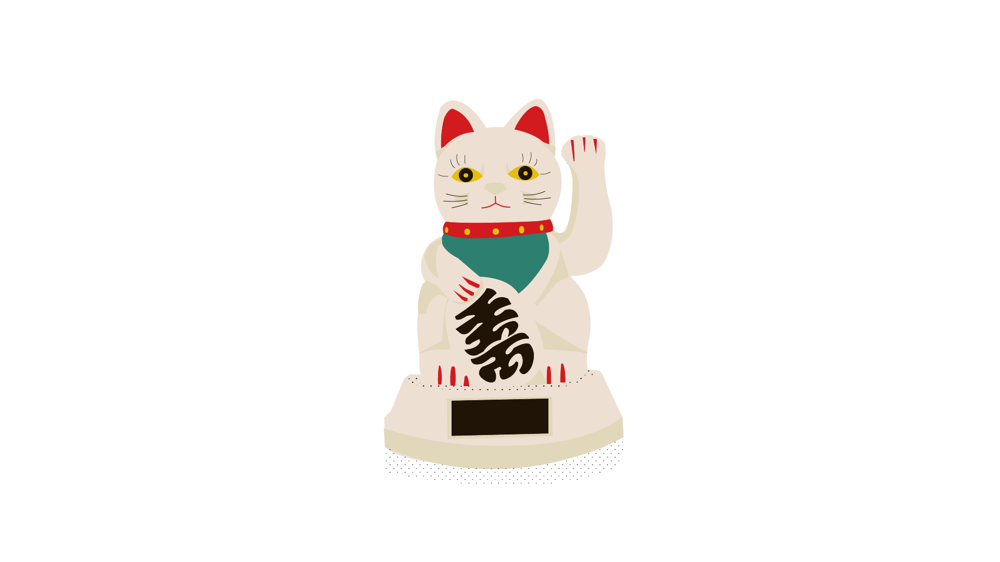

Chaton en 6 couleurs

Un chat en 6 couleurs
Comme pour le projet chassure , je devais réaliser une infographie en seulement 6 couleurs en utilisant des calques. J'ai choisi comme objet ce chat porte-bohneur nommé le "Maneki-neko" car j'ai beaucoup d'intéret pour la culture asiatique et plus particulièrement japonais. De plus, cet objet est très reconnaissable car on peut le voir souvent dans des restaurants ou magasins japonais.